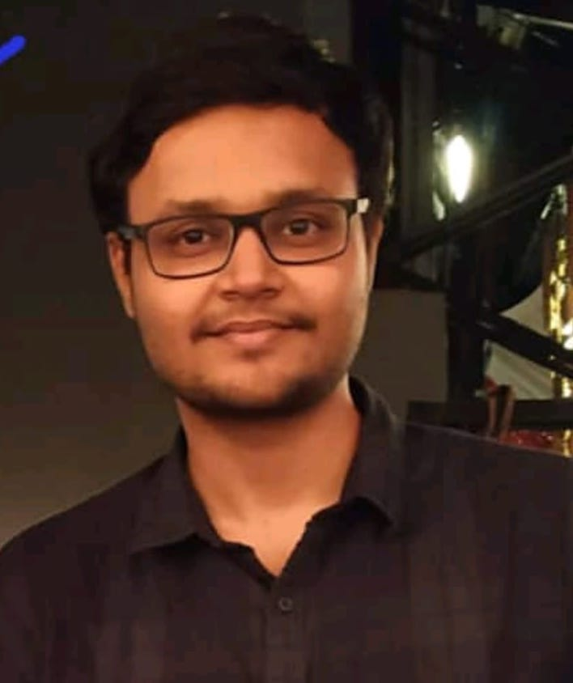
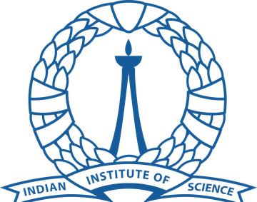
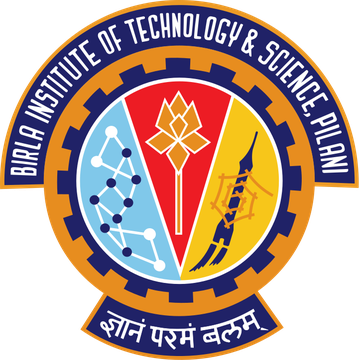

Hi! I'm a PhD student at the Language Technologies Institute, Carnegie Mellon University, fortunate to be advised by Prof. David Mortensen and Prof. Shinji Watanabe. My research focuses on self-supervised learning and spoken language processing. I'm especially interested in using speech to learn world knowledge. This summer, I am a Research Scientist Intern at Meta Reality Labs.
Previously, I was a pre-doctoral researcher at Google DeepMind, working on low-resource language capabilities for Gemini with Dr. Partha Talukdar, Dr. Sriram Ganapathy and Dr. Shikhar Vashishth.
Besides my research, I find joy in playing snooker and freestyle football (soccer). I'm always open to collaborations, feel free to reach out!



Shikhar Bharadwaj, Kwanghee Choi, Stephen McIntosh, Chin-Jou Li, Eunjung Yeo, Daisuke Saito, Nobuaki Minematsu, Shinji Watanabe, Jian Zhu, David Harwath, David Mortensen
arXiv preprint 2026
Shikhar Bharadwaj, Chin-Jou Li, Kwanghee Choi, Eunjung Yeo, William Chen, Shinji Watanabe, David Mortensen
Interspeech (Oral) 2026
Shikhar Bharadwaj*, Chin-Jou Li*, Yoonjae Kim*, Kwanghee Choi, Eunjung Yeo, Ryan Shim, Hanyu Zhou, Brendon Boldt, Karen Jacome, Kalvin Chang, Darsh Agrawal, Keer Xu, Huck Yang, Jian Zhu, Shinji Watanabe, David Mortensen (* equal contribution)
Annual Meeting of the Association for Computational Linguistics (ACL) 2026
Shikhar Bharadwaj*, Samuele Cornell*, Kwanghee Choi, Hye-jin Shim, Soham Deshmukh, Satoru Fukayama, Shinji Watanabe (* equal contribution)
Technical Report (3rd place overall, top self-supervised model) 2026
Chin-Jou Li*, Kalvin Chang*, Shikhar Bharadwaj, Eunjung Yeo, Kwanghee Choi, Jian Zhu, David Mortensen, Shinji Watanabe (* equal contribution)
Annual Meeting of the Association for Computational Linguistics (ACL, Oral, Top 5%) 2026
Shikhar Bharadwaj, Samuele Cornell, Kwanghee Choi, Satoru Fukayama, Hye-jin Shim, Soham Deshmukh, Shinji Watanabe
IEEE Workshop on Applications of Signal Processing to Audio and Acoustics (WASPAA, Oral) 2025
Gemini Team, Google (incl. Shikhar Bharadwaj)
Technical Report, Google DeepMind 2025
Jinchuan Tian, William Chen, Yifan Peng, Jiatong Shi, Siddhant Arora, Shikhar Bharadwaj, Takashi Maekaku, Yusuke Shinohara, Keita Goto, Xiang Yue, Huck Yang, Shinji Watanabe
Interspeech 2025
Shikhar Vashishth*, Harman Singh*, Shikhar Bharadwaj*, Sriram Ganapathy, Chulayuth Asawaroengchai, Kartik Audhkhasi, Andrew Rosenberg, Ankur Bapna, Bhuvana Ramabhadran (* equal contribution)
arXiv preprint 2024
Harman Singh, Nitish Gupta, Shikhar Bharadwaj, Dinesh Tewari, Partha Talukdar
Annual Meeting of the Association for Computational Linguistics (ACL) 2024
Shikhar Bharadwaj*, Min Ma*, Shikhar Vashishth*, Ankur Bapna, Sriram Ganapathy, Vera Axelrod, Siddharth Dalmia, Wei Han, Yu Zhang, Daan van Esch, Sandy Ritchie, Partha Talukdar, Jason Riesa (* equal contribution)
IEEE International Conference on Acoustics, Speech and Signal Processing (ICASSP) 2024